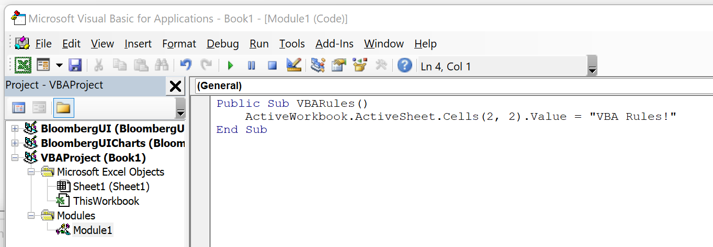
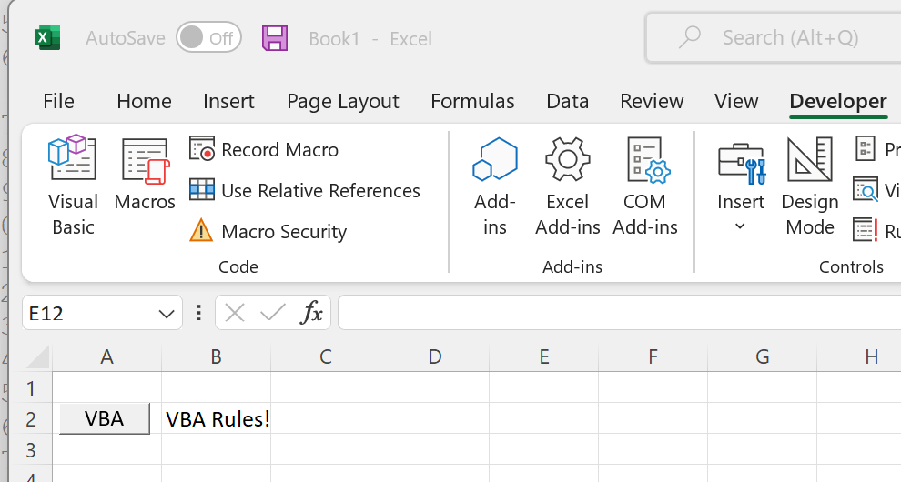
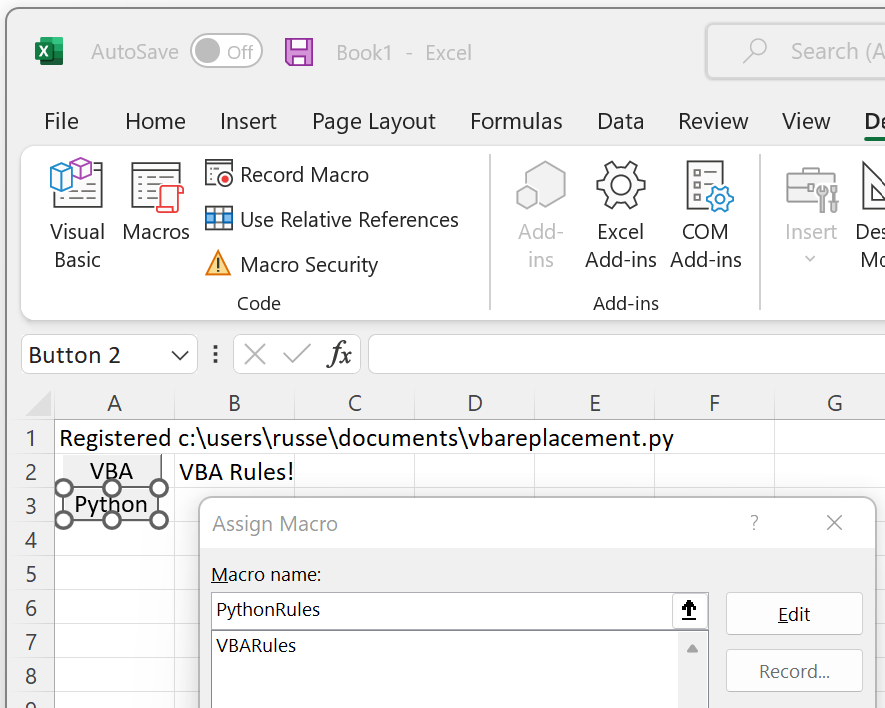
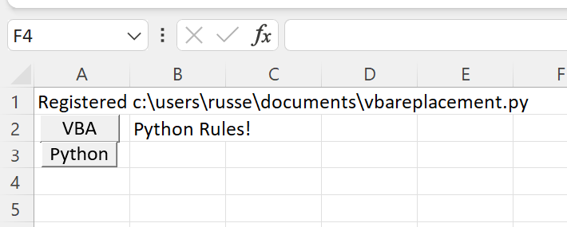

Replacing VBA with Python¶
xlSlim allows you to replace VBA code with Python code. The Python code has access to the same objects as VBA so it is usually straightforward to translate VBA code to Python.
Warning
This functionality requires a premium licence as a Python environment with the pywin32 extensions installed is required. Anaconda distributions include pywin32. See Licensing
Let’s start with this very simple VBA subroutine that updates one cell:
Public Sub VBARules()
ActiveWorkbook.ActiveSheet.Cells(2, 2).Value = "VBA Rules!"
End Sub
Add the subroutine into a Module:
{kind=link}
And then add a button calling the VBA macro.
Note
The Developer ribbon can be enabled by editing your Ribbon layout under File->Options->Customize Ribbon
{kind=link}
When the button is clicked the value of cell B2 is modified:
{kind=link}
Accomplishing the same in Python is straightforward. This Python code defines a function that sets the value of one cell:
XLSLIM_COMAPPFUNC = None
def PythonRules():
excel_obj = XLSLIM_COMAPPFUNC()
app = excel_obj.Application
app.ActiveWorkbook.ActiveSheet.Cells(2, 2).Value = "Python Rules!"
Notice how the highlighted line is identical to the VBA code, other than the initial “app.”. The Python and VBA code access an identical Excel object model, so the code can be very similar. The XLSLIM_COMAPPFUNC() function is used to gain access to the Excel object model.
Save the Python code as a new file on your PC. I saved the file in my Documents folder.
Register the Python code with this RegisterPyModule() formula (amending the location to match where you saved the file):
=RegisterPyModule("c:\users\russe\documents\vbareplacement.py")
Then add another button to call the Python function:
{kind=link}
Note
The names of the Python macro functions do not appear in the list. However, if you type the name correctly the button will be linked to the Python code.
Clicking on the button edits cell B2 to properly reflect the state of the world!
{kind=link}
Easier code editing¶
While editing your code it will be easiest to run the code from a Python editor so you can rapidly see the results and amend as required.
Edit your Python code to match the code below, the amended lines are highlighted:
import win32com.client as win32
XLSLIM_COMAPPFUNC = None
def PythonRules():
if XLSLIM_COMAPPFUNC is not None:
# Running from Excel
excel_obj = XLSLIM_COMAPPFUNC()
app = excel_obj.Application
else:
# Running in an editor
app = win32.gencache.EnsureDispatch("Excel.Application")
app.Visible = 1
app.Workbooks.Add().Activate()
app.ActiveWorkbook.ActiveSheet.Cells(2, 2).Value = "Python Rules!"
if __name__ == "__main__":
PythonRules()
This code will now open a new instance of Excel when run from an external editor. When run within Excel the code will behave as before and modify the active Excel instance. This code modification allows the Python code to be run and edited in a very similar manner to VBA code in the VBA editor.
Further examples¶
This code shows how to perform common tasks. See Creating a Pivot Table using Python for an example how to replace VBA to create a pivot table.
import time
import pythoncom
import win32com.client as win32
from win32com.client import constants
XLSLIM_COMAPPFUNC = None
def manipulate_excel():
if XLSLIM_COMAPPFUNC is not None:
# Running from Excel
# Do be careful not to accidentally edit the calling cell
excel_obj = XLSLIM_COMAPPFUNC()
app = excel_obj.Application
else:
# Running in an editor
#
# This could be used instead to connect to a running Excel
# app = win32.GetActiveObject("Excel.Application")
# however the gencache versions gives a better editing experience
# as methods and properties are then known in the editor
app = win32.gencache.EnsureDispatch("Excel.Application")
app.Visible = 1
app.Workbooks.Add().Activate()
# Cells can be referenced in various ways
app.ActiveWorkbook.ActiveSheet.Cells(2, 1).Value = "Python Rules!"
# Names can be used too, commented out now as Book1 easily becomes Book2
# app.Workbooks("Book1").Sheets("Sheet1").Cells(2, 1).Value = "Python Rules!"
app.Workbooks(1).Sheets(1).Cells(2, 1).Value = "Python Rules!"
# Creating variables for books and sheets makes the code neater
xlBook = app.Workbooks(1)
xlSheet = app.Sheets(1)
xlSheet.Cells(2, 1).Value = "Python Rules!"
# Handling datetimes
now = time.mktime(time.localtime())
time_object = pythoncom.MakeTime(now)
xlSheet.Cells(3, 1).Value = time_object
# Setting a formula
xlSheet.Cells(4, 1).Formula = "=UPPER(A2)"
# Clear a cell
xlSheet.Cells(5, 1).Value = None
# Ranges can be set in various ways
range1 = xlSheet.Cells(4, 1) # one-cell range
range2 = xlSheet.Range("B5:C10") # excel notation
range3 = xlSheet.Range(xlSheet.Cells(3, 3), xlSheet.Cells(6, 4))
range3.Interior.ColorIndex = 7
# Set range data
range3.Value = (("z", 1), ("y", 2), ("x", 3), ("w", 4))
# Call a function - sort range - note the use of constants
range3.Sort(
Key1=xlSheet.Range("C3"),
Order1=constants.xlAscending,
Orientation=constants.xlSortColumns,
)
return "Done"
if __name__ == "__main__":
manipulate_excel()